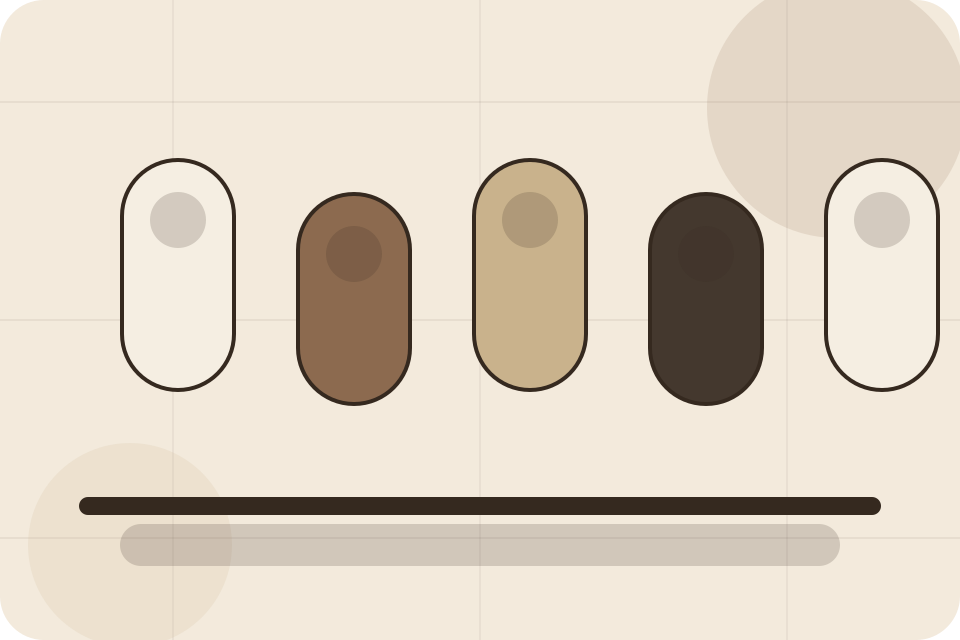
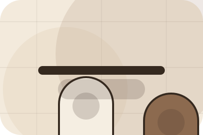
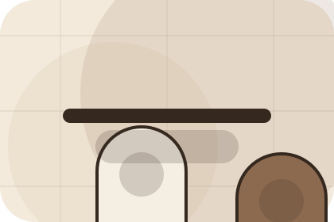
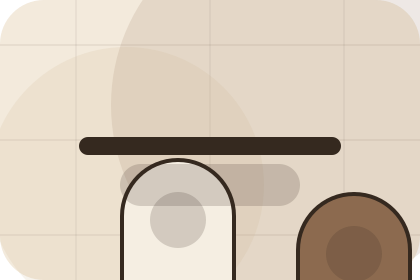
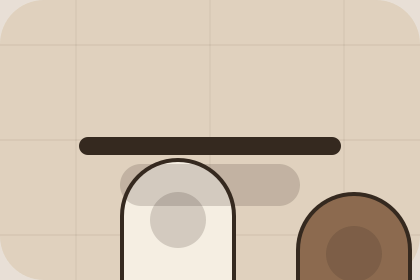

Products / 01
Products by Skin
Products shaped for beauty, cosmetics & aesthetic products decisions.
Products opens as a clear beauty decision hub: what Skin offers, who it helps, why it matters, and which route to take first.
The first screen combines positioning, proof, primary action, and fast internal navigation, so people can act immediately or compare the rest of the products route with context.
Browse quicklyCompare clearlyAsk availability
Muted product education hero
Build a routine
Select the closest route and Skin keeps the next step, proof, and follow-up expectation aligned with self-care confidence.

Products / 02
Benefits: the better state
Benefits defines the better state Skin is built to create, with enough detail to make the promise believable.
A routine site with restrained product education, ingredient notes, tactile cards, and consultation routes. The section grounds that direction in concrete benefits, visible tradeoffs, and a next route visitors can use when the promise feels relevant.
Explore ProductsBetter State
Benefits defines what becomes clearer, easier, or safer when Skin is the chosen route.
Practical Gain
The benefit is tied to self-care confidence, not a vague quality claim.
Proof Route
Visitors get a linked path to compare the promise against services, standards, or examples.
Products / 03
Compare service routes
Texture explains the practical scope, best-fit situations, and expected outcome so beauty visitors can compare options without decoding jargon.
The section keeps the offer concrete: what is included, who it is best for, what decision it supports, and which linked route gives the deeper detail.
Explore Products- 01
Best Fit
Who should use texture and when it belongs in the products journey.
- 02
What Changes
The practical benefit visitors should expect after choosing this route.
- 03
Deeper Route
Where to compare details, pricing, support, or contact options before committing.
Products / 04
Compare service routes
Usage explains the practical scope, best-fit situations, and expected outcome so beauty visitors can compare options without decoding jargon.
The section keeps the offer concrete: what is included, who it is best for, what decision it supports, and which linked route gives the deeper detail.
Explore ProductsSkin structures usage around best fit, what changes, and a clear next route so visitors can compare the block quickly before they build a routine.
Build RoutineProducts / 06
Compare service routes
Types explains the practical scope, best-fit situations, and expected outcome so beauty visitors can compare options without decoding jargon.
The section keeps the offer concrete: what is included, who it is best for, what decision it supports, and which linked route gives the deeper detail.
Explore ProductsBest Fit
Who should use types and when it belongs in the products journey.
What Changes
The practical benefit visitors should expect after choosing this route.

Deeper Route
Where to compare details, pricing, support, or contact options before committing.
Products / 07
Compare service routes
Reviews explains the practical scope, best-fit situations, and expected outcome so beauty visitors can compare options without decoding jargon.
The section keeps the offer concrete: what is included, who it is best for, what decision it supports, and which linked route gives the deeper detail.
Explore ProductsWho should use reviews and when it belongs in the products journey.
The practical benefit visitors should expect after choosing this route.
Where to compare details, pricing, support, or contact options before committing.
Products / 09
Compare service routes
Questions explains the practical scope, best-fit situations, and expected outcome so beauty visitors can compare options without decoding jargon.
The section keeps the offer concrete: what is included, who it is best for, what decision it supports, and which linked route gives the deeper detail.
Open Contact
Best Fit
Who should use questions and when it belongs in the products journey.
What Changes
The practical benefit visitors should expect after choosing this route.

Deeper Route
Where to compare details, pricing, support, or contact options before committing.
What happens first?
Skin starts with a focused intake so the recommendation matches the visitor's context, risk, timing, and readiness.
How is scope kept clear?
Each route explains inclusions, exclusions, documents, timing, and the decision points that affect final delivery.
How is this site different?
The theme uses apothecary routine journal, ingredient education cards, and routine finder, ingredient glossary, product filter rather than a shared template rhythm.
Muted product education hero
Build a routine
Select the closest route and Skin keeps the next step, proof, and follow-up expectation aligned with self-care confidence.
Products / 10
Build Routine
Skin closes the products route with a clear action, a quick reminder of the value, and a low-friction way to build a routine.
Visitors who are ready can use the primary action. Visitors who are still comparing can scan the section links, proof, and support routes before they build a routine.
Build RoutineThe final block keeps the choice simple: act now, compare one more proof route, or send enough detail for a focused response.
Build Routineself-care confidence
Build Routine
A routine site with restrained product education, ingredient notes, tactile cards, and consultation routes. Products ends with a direct path to build a routine, plus enough context for visitors who still need to compare.

Build RoutineImportant notes before you act
Ingredient suitability varies by person; patch testing and professional advice may be needed for sensitive users.